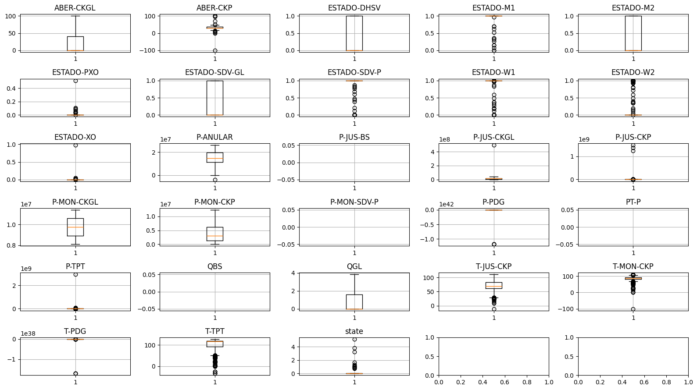
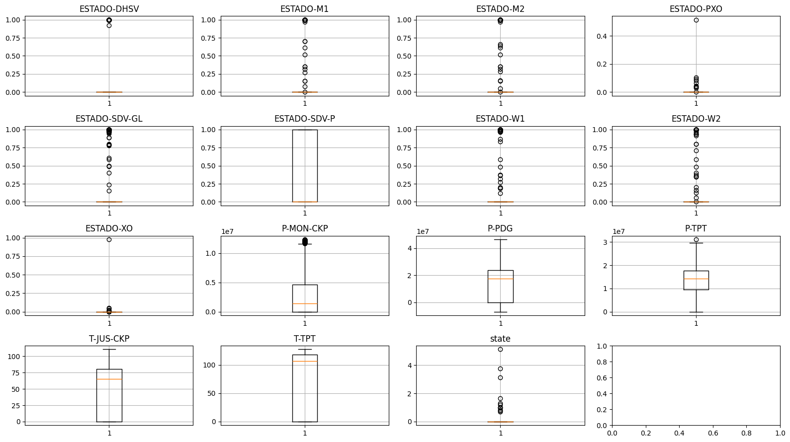

Exploring the 3W dataset
[ ]:
from ThreeWToolkit.dataset import ParquetDatasetConfig, TransformConfig
from ThreeWToolkit.preprocessing import (
CleanSignalsConfig,
FillLabelsConfig,
ImputeMissingConfig,
)
In this notebook, we will explore the 3W dataset by examining missing data, analyzing the average values of the features, and demonstrating a simple example of data cleaning.
Loading the dataset
Define the folder where your dataset is stored. If the dataset is not found there, it will be downloaded automatically. Let’s load the dataset in its raw format, without any data cleaning:
[2]:
# Modify this path to the folder where your dataset is downloaded
dataset_path = "../../dataset"
ds = ParquetDatasetConfig(path=dataset_path).build()
print("--------------------------------")
print(f"Loading all events, there are {len(ds)} events")
2026-04-06 13:10:47,108 | INFO | ThreeWToolkit.dataset.parquet_dataset | Dataset found at ../../dataset
2026-04-06 13:10:47,109 | INFO | ThreeWToolkit.dataset.parquet_dataset | Validating dataset integrity...
2026-04-06 13:10:47,110 | INFO | ThreeWToolkit.dataset.parquet_dataset | Dataset integrity check passed!
--------------------------------
Loading all events, there are 2228 events
☝️ The dataset contains 2228 .parquet files.
The ds object is a collection of the content of each file.
Each element in ds is a DatasetOutputs object that contains 3 items:
The signal
The label (or sensor name)
Metadata
[3]:
first_element = ds[0]
print(f"Type of the first element: {type(first_element)}")
# print parameters from the DatasetOutputs class
print("--------------------------------")
print(f"Parameters of the first element: {first_element.__dict__.keys()}")
Type of the first element: <class 'ThreeWToolkit.core.dataset_outputs.DatasetOutputs'>
--------------------------------
Parameters of the first element: dict_keys(['signal', 'label', 'metadata'])
Let’s gather the signal of each file and its average values:
[4]:
averages, counts = [], []
for event in ds:
signal = event.signal
averages.append(signal.mean())
counts.append(signal.count())
Checking missing data
[5]:
total = sum(counts)
total
[5]:
ABER-CKGL 8491513
ABER-CKP 12326458
ESTADO-DHSV 13865397
ESTADO-M1 17773205
ESTADO-M2 17688282
ESTADO-PXO 18176203
ESTADO-SDV-GL 17105271
ESTADO-SDV-P 24316107
ESTADO-W1 18938036
ESTADO-W2 18293462
ESTADO-XO 18538730
P-ANULAR 25460515
P-JUS-BS 0
P-JUS-CKGL 31896234
P-JUS-CKP 22115960
P-MON-CKGL 308726
P-MON-CKP 69507467
P-MON-SDV-P 0
P-PDG 68671102
PT-P 0
P-TPT 71205535
QBS 0
QGL 24565960
T-JUS-CKP 60554418
T-MON-CKP 23617605
T-PDG 20811272
T-TPT 66325278
state 72558918
dtype: int64
Which signals have a total of zero occurences (missing data)?
[6]:
missing_columns = total[total == 0].index
missing_columns
[6]:
Index(['P-JUS-BS', 'P-MON-SDV-P', 'PT-P', 'QBS'], dtype='str')
No single event in dataset contains data in any of these ☝️ tags.
P-MON-CKGL is also suspect. 🤔
Distribution of Signal Averages Across Events
Let’s take a look at the distrubution of averages:
[7]:
signals = counts[0].index
distribution = {s: [] for s in signals}
for signal in signals:
for average, count in zip(averages, counts):
if count[signal] != 0:
distribution[signal].append(average[signal])
[ ]:
import matplotlib.pyplot as plt
import numpy as np
def plot_boxes(distribution):
n_rows = int(np.ceil(np.sqrt(len(distribution))))
n_cols = int(np.ceil(len(distribution) / n_rows))
_, ax = plt.subplots(n_rows, n_cols, figsize=(16, 9), tight_layout=True)
for i, (k, v) in enumerate(distribution.items()):
ax[i // n_cols, i % n_cols].boxplot(v)
ax[i // n_cols, i % n_cols].set_title(k)
ax[i // n_cols, i % n_cols].grid()
[9]:
plot_boxes(distribution)

Affected Tags:
ABER-CKP: Negative valuesP-JUS-CKGL: Readings capping scaleP-JUS-CKP: Readings capping scaleP-PDG: sameP-TPT: sameT-MON-CKP: large negative valuesT-PDG: capping scale
The following solutions can be considered:
Removing the affected files, which is easier but less accurate.
Ignoring the apparently incorrect data, which is more complex and requires metadata.
Data cleaning
To use the toolkit provided data cleaning options, we need to instantiate a Transform class (from TransformConfig) which creates a subclass from the ParquetDataset instance.
This class allows the use of pre processing and feature extraction properties. First, let’s initialize a instance of ParquetDataset.
[10]:
ds = ParquetDatasetConfig(path=dataset_path).build()
2026-04-06 13:11:24,171 | INFO | ThreeWToolkit.dataset.parquet_dataset | Dataset found at ../../dataset
2026-04-06 13:11:24,172 | INFO | ThreeWToolkit.dataset.parquet_dataset | Validating dataset integrity...
2026-04-06 13:11:24,173 | INFO | ThreeWToolkit.dataset.parquet_dataset | Dataset integrity check passed!
Now we will use the TransformConfig object, with the CleanSignalsConfig pre-processing option, to fit and transform our ParquetDataset object.
[11]:
dataset_processor = TransformConfig(pre_processing=CleanSignalsConfig()).build()
# Fit the processor to the dataset
dataset_processor.fit(ds)
# Transform the dataset using the fitted processor
transformed_ds = dataset_processor.transform(ds)
With the CleanSignals pre-processing we can observe in that:
Events whose statistics (standard deviation or average) fall outside a specified IQR thresholds may be considered faulty, and will be replaced with NaN values.
[12]:
transformed_ds[0].signal
[12]:
| ESTADO-DHSV | ESTADO-M1 | ESTADO-M2 | ESTADO-PXO | ESTADO-SDV-GL | ESTADO-SDV-P | ESTADO-W1 | ESTADO-W2 | ESTADO-XO | P-MON-CKP | P-PDG | P-TPT | T-JUS-CKP | T-TPT | state | |
|---|---|---|---|---|---|---|---|---|---|---|---|---|---|---|---|
| timestamp | |||||||||||||||
| 2017-02-01 01:02:07 | 1.0 | 1.0 | 0.0 | 0.0 | 0.0 | 1.0 | 1.0 | 0.0 | 0.0 | 1627884.0 | NaN | 10074540.0 | 84.64463 | 119.0781 | <NA> |
| 2017-02-01 01:02:08 | 1.0 | 1.0 | 0.0 | 0.0 | 0.0 | 1.0 | 1.0 | 0.0 | 0.0 | 1633397.0 | NaN | 10074540.0 | 84.63828 | 119.0781 | <NA> |
| 2017-02-01 01:02:09 | 1.0 | 1.0 | 0.0 | 0.0 | 0.0 | 1.0 | 1.0 | 0.0 | 0.0 | 1638909.0 | NaN | 10074540.0 | 84.63194 | 119.0781 | <NA> |
| 2017-02-01 01:02:10 | 1.0 | 1.0 | 0.0 | 0.0 | 0.0 | 1.0 | 1.0 | 0.0 | 0.0 | 1644422.0 | NaN | 10074540.0 | 84.62558 | 119.0781 | <NA> |
| 2017-02-01 01:02:11 | 1.0 | 1.0 | 0.0 | 0.0 | 0.0 | 1.0 | 1.0 | 0.0 | 0.0 | 1649934.0 | NaN | 10074540.0 | 84.61923 | 119.0781 | <NA> |
| ... | ... | ... | ... | ... | ... | ... | ... | ... | ... | ... | ... | ... | ... | ... | ... |
| 2017-02-01 06:59:56 | 1.0 | 1.0 | 0.0 | 0.0 | 0.0 | 1.0 | 1.0 | 0.0 | 0.0 | 1504822.0 | NaN | 10014690.0 | 83.44021 | 119.0453 | 0 |
| 2017-02-01 06:59:57 | 1.0 | 1.0 | 0.0 | 0.0 | 0.0 | 1.0 | 1.0 | 0.0 | 0.0 | 1510422.0 | NaN | 10014690.0 | 83.45413 | 119.0452 | 0 |
| 2017-02-01 06:59:58 | 1.0 | 1.0 | 0.0 | 0.0 | 0.0 | 1.0 | 1.0 | 0.0 | 0.0 | 1516023.0 | NaN | 10014690.0 | 83.46806 | 119.0451 | 0 |
| 2017-02-01 06:59:59 | 1.0 | 1.0 | 0.0 | 0.0 | 0.0 | 1.0 | 1.0 | 0.0 | 0.0 | 1521623.0 | NaN | 10014690.0 | 83.48199 | 119.0450 | 0 |
| 2017-02-01 07:00:00 | 1.0 | 1.0 | 0.0 | 0.0 | 0.0 | 1.0 | 1.0 | 0.0 | 0.0 | 1527223.0 | NaN | 10014690.0 | 83.49591 | 119.0449 | 0 |
21474 rows × 15 columns
Now that we are familiar with the pre-processing usage, we will introduce the use of Adapter which allow us to use multiple pre-procesing or feature extraction classes in a custom combined way.
For pre-processing we can import the SequentialPreprocessingAdapterConfig and for feature extraction we can import both SequentialFeatureAdapterConfig and ConcatFeatureAdapterConfig.
[13]:
from ThreeWToolkit.preprocessing import SequentialPreprocessingAdapterConfig
Now let’s create a custom pipeline for cleaning our dataset, using:
CleanSignals
FillLabels
ImputeMissing
[14]:
dataset_processor = TransformConfig(
pre_processing=SequentialPreprocessingAdapterConfig(
steps=[CleanSignalsConfig(), FillLabelsConfig(), ImputeMissingConfig()]
)
).build()
# Fit the processor to the dataset
dataset_processor.fit(ds)
# Transform the dataset using the fitted processor
transformed_ds = dataset_processor.transform(ds)
Let’s repeat the process and gather the signal of each file and its average values and deviations:
[15]:
averages, counts = [], []
for event in transformed_ds:
signal = event.signal
averages.append(signal.mean())
counts.append(signal.count())
Tags that are mostly missing are removed. Reading errors are sensibly removed.
[16]:
signals = counts[0].index
distribution = {s: [] for s in signals}
for s in signals:
for a, c in zip(averages, counts):
if c[s] != 0:
distribution[s].append(a[s])
plot_boxes(distribution)

Do we have any missing data now? 🤔
[17]:
total = sum(counts)
total
[17]:
ESTADO-DHSV 76587318
ESTADO-M1 76587318
ESTADO-M2 76587318
ESTADO-PXO 76587318
ESTADO-SDV-GL 76587318
ESTADO-SDV-P 76587318
ESTADO-W1 76587318
ESTADO-W2 76587318
ESTADO-XO 76587318
P-MON-CKP 76587318
P-PDG 76587318
P-TPT 76587318
T-JUS-CKP 76587318
T-TPT 76587318
state 76587318
dtype: int64
🎉 No more missing data!
It is now possible to compute, for instance, global averages/deviations:
[18]:
global_avg = sum(a.fillna(0) * c / total for a, c in zip(averages, counts))
global_avg
[18]:
ESTADO-DHSV 0.103258
ESTADO-M1 0.198018
ESTADO-M2 0.073268
ESTADO-PXO 0.002094
ESTADO-SDV-GL 0.121678
ESTADO-SDV-P 0.289239
ESTADO-W1 0.173747
ESTADO-W2 0.057514
ESTADO-XO 0.000749
P-MON-CKP 2508965.6152
P-PDG 14155852.997264
P-TPT 12497210.363776
T-JUS-CKP 52.244405
T-TPT 66.108191
state 0.101929
dtype: Float64
and for the deviations:
[19]:
counts, deviations = [], []
for event in transformed_ds:
signal = event.signal
deviations.append((signal - global_avg).pow(2).mean())
counts.append(signal.count())
[20]:
global_std = sum(d.fillna(0) * c / total for d, c in zip(deviations, counts)).pow(0.5)
global_std
[20]:
ESTADO-DHSV 0.304295
ESTADO-M1 0.398506
ESTADO-M2 0.260573
ESTADO-PXO 0.045711
ESTADO-SDV-GL 0.326914
ESTADO-SDV-P 0.453409
ESTADO-W1 0.378892
ESTADO-W2 0.232821
ESTADO-XO 0.027364
P-MON-CKP 2960490.347842
P-PDG 12177573.018236
P-TPT 6958635.3571
T-JUS-CKP 34.206237
T-TPT 53.600097
state 0.700301
dtype: Float64